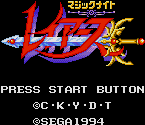
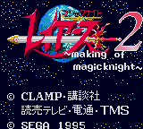

Magical Knight Rayearth - SNES Games
Table of Contents
|
Series Information
|
Game Gear Games
Saturn Games
|
SNES Games
Magical Knight Rayearth
|
Magical Knight Rayearth 2
Magical Knight Rayearth

Genre:
RPG
No other information available at this time.
Magical Knight Rayearth 2: Making of Magic Knight

Genre:
Unknown
No other information available at this time.
Anime Video Game Resource Center © 1998 by
Luis A. Cruz